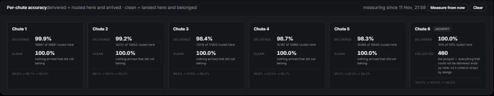
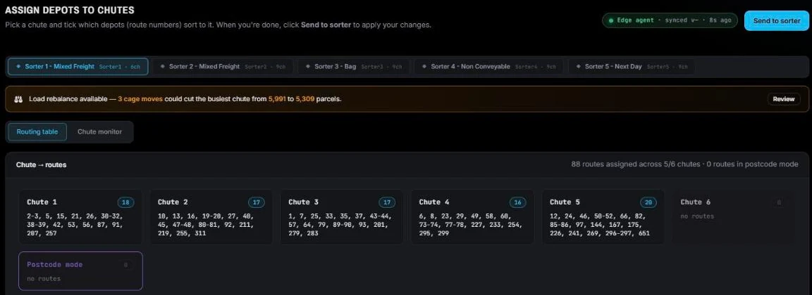
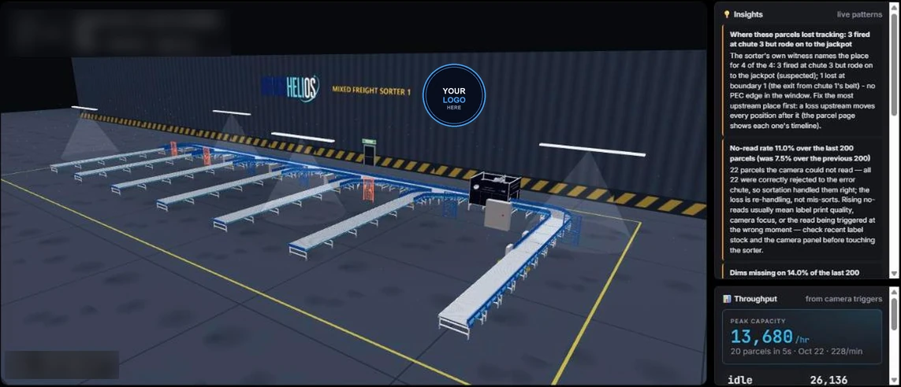
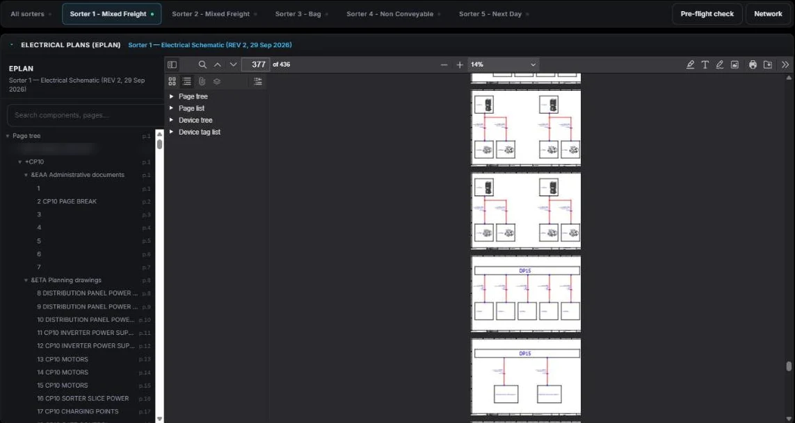
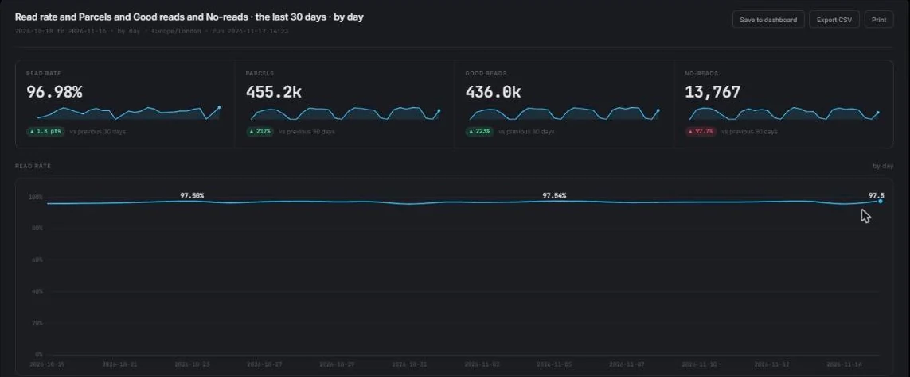

IoT, smart factories, connected warehouses. The industry has been promising them for a decade. Walk onto most sites and you'll find the same thing: grey screens, cryptic alarm codes, spreadsheets exported at the end of the shift, and a phone number for the one specialist who can change anything.
That's because most warehouse software is designed by engineers for engineers. The operators, the shift leads and the owners, the people who actually have to read the information and act on it, were never the brief. HeliOS is built the other way round.
The sensors were never the problem. Most automated sites already collect more data than anyone uses. What failed is everything between the data and the person who needs it.
Screens show PLC tags, fault codes and raw counts. That makes sense to the person who wrote the program. The shift lead with forty people on the floor needs to know what's wrong, where it is, and what to do next.
Warehouse control software is usually custom code written to connect one site's machines to its management system, often by a different company from the one that built the machines. Every change means a specialist, a quote and a wait.
A dashboard that says read rate is 97.2% doesn't tell you it drops every day at the 14:00 shift change, or that chute 17 is up 28% this week. Reports arrive after the problem has already cost you a shift.
HeliOS runs the operation from one place: planning, flow, people, costs, maintenance and the automation itself. It's a product, the same on every site, and configured by the operator, not rewritten by a contractor.
Eight modules, one shift. This is how a parcel hub uses HeliOS from first induct to the end-of-day report.
Every user builds their own dashboard by drag and drop: throughput, read rate, active sorters, routing, a 365-day heatmap. The shift lead sees the shift. The site manager sees the week. Nobody squints at someone else's layout.
Throughput, good, multi and no-read rates, uptime and active sorters, site-wide or per sorter, from a 10-minute window to the whole day. Every chute is scored two ways: delivered, the share of parcels routed there that arrived, and clean, whether anything landed there that didn't belong. On Sorter 1 at Cannock, every chute reads 100% clean.

Search any barcode and see the parcel: dimensions, weight, destination, chute, service and read status, with its capture image from the scan tunnel. Customer service gets an answer, not a ticket.
Assign depots to chutes in a few clicks and push the new configuration straight to the sorter through its edge agent. HeliOS also suggests the move itself: here, three cage moves would cut the busiest chute from 5,991 to 5,309 parcels. Rebalancing for peak no longer needs a controls engineer on site.

A real-time 3D model of the actual sorter, with parcels moving as they move on the floor. When something stops, the twin shows which device, which door to open and the fault code, and alarms are acknowledged on the same screen. Alongside it, the Insights panel explains in plain English where parcels lost tracking and what to check first.

The full electrical schematics live in HeliOS next to the machine they describe: panel layouts, cable runs, PROFINET, power supplies and E-stops. The fix is logged as a work order against the asset, with spares, datasheets and reorder levels, so it becomes planned maintenance next time.

The AI watches the data and says what matters in plain English, grounded in what Orion's engineers have learned on live sites, not general internet data.
Type the question you'd ask an analyst, such as "read rate by day for the last 30 days", and HeliOS builds the report: headline numbers against the previous period, the trend, the daily breakdown and a note on what changed. Night reviews, out-of-gauge and volumetric reports sit alongside, exported to PDF or CSV for the owner, the client or the board.

Screens marked "real" are from HeliOS running Sorter 1 at APC Overnight, Cannock, captured 17 November 2026. Times, and the panels not marked real, illustrate a typical shift.
Project Jupiter is a Helix sortation line at APC Overnight's Cannock hub, designed, built and programmed by Orion and controlled by HeliOS. Same line, same team, two months.
What's my chute doing?
Live counts, blockages and misses on the board at the chute. No codes to decode.
Where's the problem, and what do I do?
Faults by device, door and code. Routing changes in clicks, without waiting for an engineer.
Give me the drawing and the history.
Live schematics, alarms, work orders and spares in one place, next to the machine.
Are we hitting the number?
Volume against target, uptime and payback, tracked live and reported in one click.
Start with visibility and step up as the operation is ready, with no re-install.
Operational visibility: live dashboards, throughput KPIs, alerts and monthly reports.
Prediction and decision support: bottleneck forecasts, demand prediction and trend analytics.
Optimisation and AI actions: dynamic rerouting, labour recommendations, root-cause analysis.
Network-wide intelligence: multi-site control, custom integrations and partner API access.
We'll show you HeliOS live, on a system like yours, and talk through which tier fits. Or come to our factory in West Sussex and see a Helix line being built and tested.